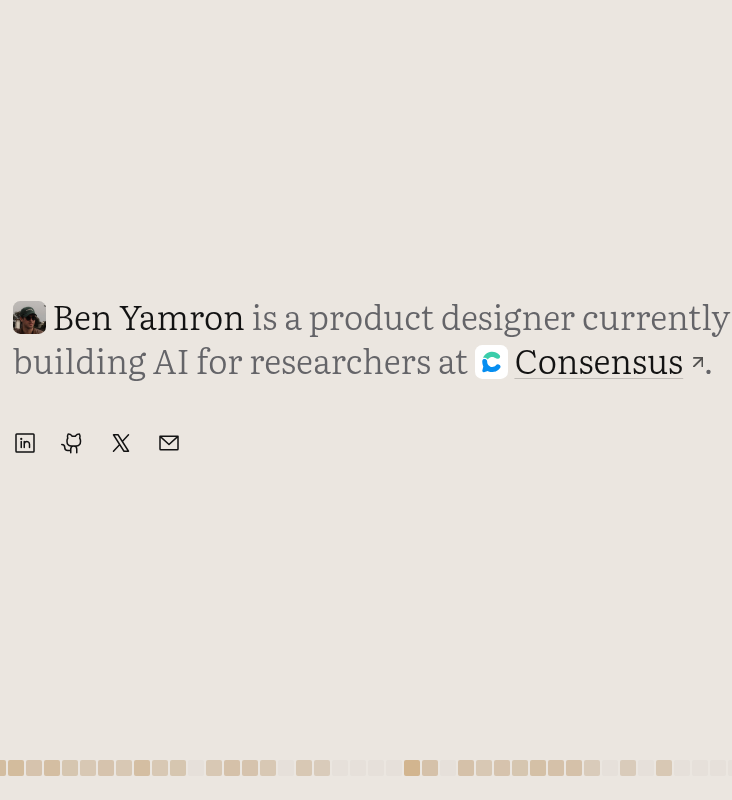
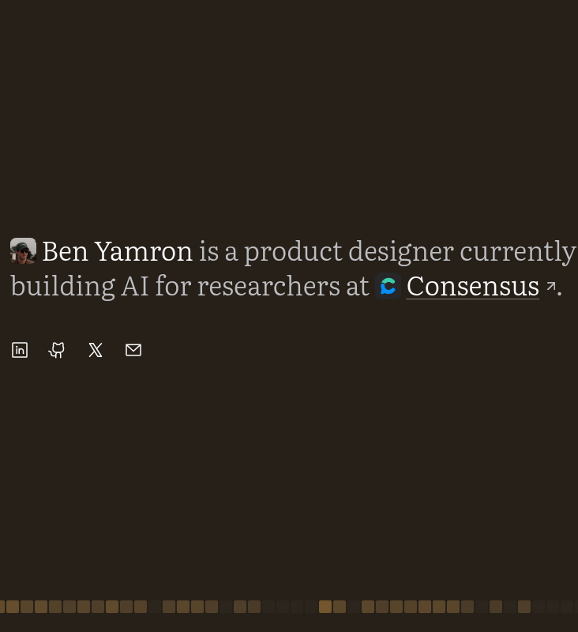
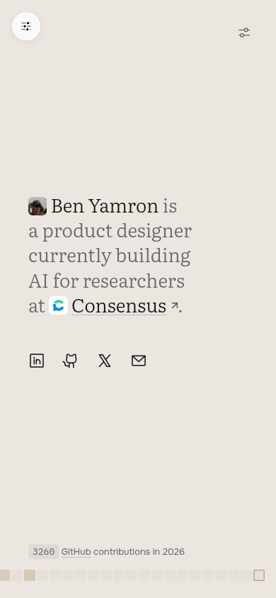
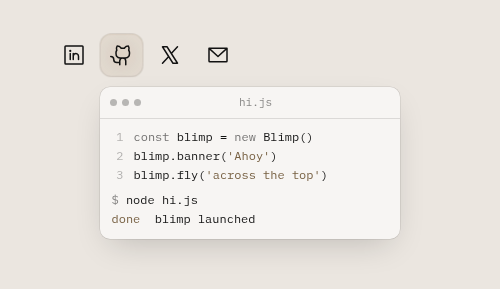
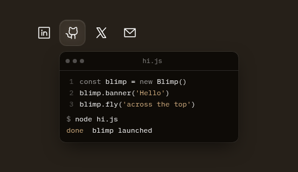

Simple home prototype: one fitted sentence, four contact objects
The home is reduced to a single sentence sized so its longest line fills the column (≈50 characters a line), with the portrait and Consensus mark set inline, and contact as four icon-only objects (LinkedIn, GitHub, X, email) above a full-bleed contribution strip. Settings moved behind a click-only handle so nothing competes with the sentence. Each contact icon carries one physical easter egg that pops out of the icon itself — a business card, a terminal that launches a blimp, a flock, a paper plane — never new page chrome; pop-out windows follow the page's light/dark mode.
Decision test: At a glance the page reads as one sentence and a row of ways to reach Ben; the easter eggs reward lingering without competing with a click, and nothing reads as UI chrome.
Grounded in: core-docs/design-language.md § Simple home (/new/simple) — prototype rules · core-docs/guidelines.md





- Email: keep the paper plane on hover but as a linger beat (longer dwell, suppressed once you click), or move it to click?
- Dark-mode cursor glow sits ~1 level above the page at the current intensity — does it need its own dark intensity?
- Greeting list on the blimp vs the voice rules (Ahoy / Howdy / Hiya / Greetings / Good day).